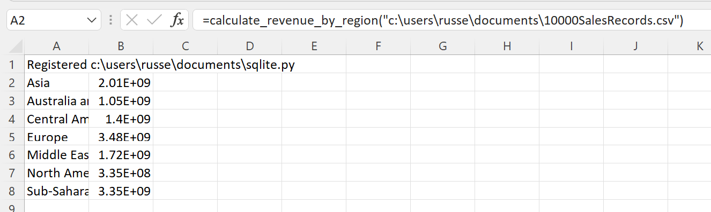
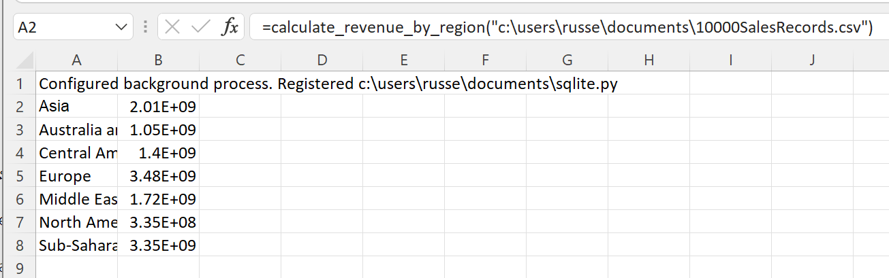
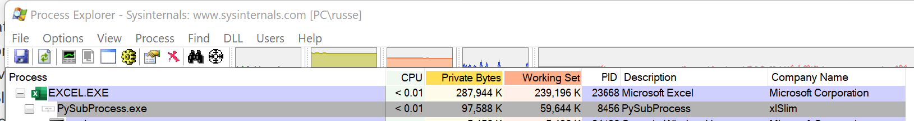
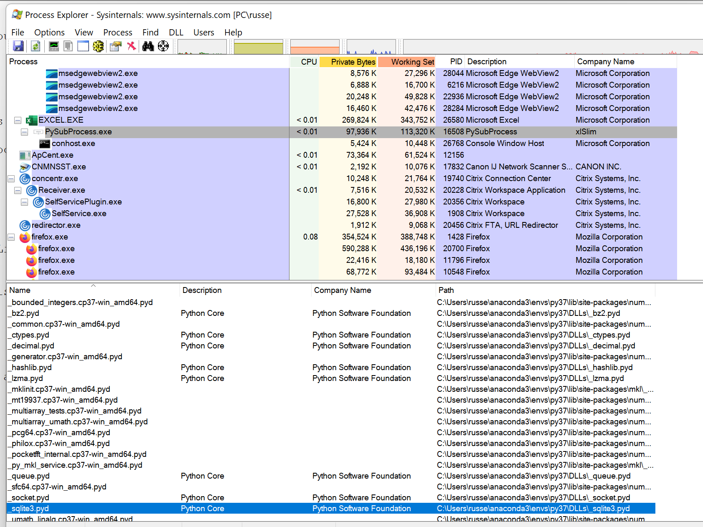

Running Python in a background process¶
A common problem with Windows is that generally only one version of a DLL can be loaded into a process. This can be a problem if common DLLs are being loaded by both an Excel add-in and Python code. For example, you could have a valuation library that is available as both an Excel add-in and a Python library, in which case xlSlim would encounter problems if the Excel add-in and Python package used different versions of the valuation library’s DLLs. Another common problem is that Excel processes can use a lot of system resources, both memory and CPU.
xlSlim has the ability to run Python code in a background process. This background process is spawned as a sub-process of Excel. Commmunication with the sub-process is efficient.
Warning
Running Python in a background process requires a premium licence. See Licensing
We will use the Using SQLite to analyse data example to show how the background process works. Please work through the example to get to the stage that the sales by region are shown in Excel.
{kind=link}
We need to amend the call to RegisterPyModule() so a background process is used. Edit the function in A1, passing TRUE for the UseBackgroundProcess parameter
=RegisterPyModule("c:\users\russe\documents\sqlite.py",,,TRUE)
{kind=link}
The results are processed the same as before, the background processing does not affect how the xlSlim functions behave.
{kind=link}
Using Process Explorer, we can see the background process running as a child of the EXCEL process:
{kind=link}
Controlling DLL loading¶
Let’s imagine Excel has an add-in which also uses the SQLite database, however a different version to the Python environment. In this case we need to be sure that SQLite libraries are not being loaded by any Python code within the Excel process.
Running the Using SQLite to analyse data example with the RegisterPyModule() UseBackgroundProcess parameter set to FALSE (or left out) we can see the _sqlite.pyd DLL loaded in the Excel process:
{kind=link}
We’d like to run the Python code in a background process and only load SQLite libraries in the background process. This will require a small change to the Python code.
# Read a csv file into SQLite and analyse
import os
import csv
def calculate_revenue_by_region(filepath):
"""Calculates revenue by region.
Loads the csv file into SQLite and groups by region.
"""
import sqlite3
...
We need to move the sqlite3 import to be within the calculate_revenue_by_region() function. This ensures the library is not imported when xlSlim analyses the code when registered.
Now running the Using SQLite to analyse data example with the RegisterPyModule() UseBackgroundProcess parameter set to TRUE, we see the background process running as expected and more importantly we can see that _sqlite.pyd is not loaded into the Excel process.
{kind=link}
_sqlite.pyd is loaded into the PySubProcess process:
{kind=link}
With some careful editing of imports Python code can be run so certain libraries are only loaded in the background process.